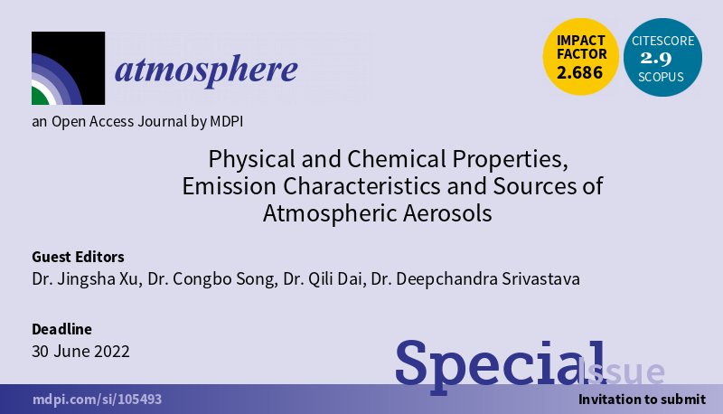

 https://www.mdpi.com/si/105493
Dear Colleagues,
Air pollution ranked the fourth largest risk factor in terms of human health according to the Global Burden of Disease Study in 2019. Largest increase in risk exposure has been seen for particulate matter (PM) pollution. In addition to health implications, aerosols acting as cloud condensation nuclei (CCN) or ice nuclei particles (INP) can interact with clouds thus affecting the global climate. To understand the role of aerosols in both public health and climate, we propose the Special Issue ‘Physical and Chemical Properties, Emission Characteristics and Sources of Atmospheric Aerosols’ to encourage researchers to share recent advances in such topic. This topic focuses on sources and processes of aerosols collected from traffic, urban, rural or marine atmosphere. Both natural (e.g., sea spray aerosols, mineral dust, biomass burning and biogenic aerosols, etc.) and anthropogenic (e.g., on-road vehicles, industrial, shipping, residential solid fuel burning, etc.) sources can contribute to the aerosol burden in the atmosphere. We welcome papers contributing to the characterization (e.g., chemical composition, size distribution, etc.) of source emissions from both laboratory studies and field measurements. Research on evolving/aging processes from source to receptor, physical and chemical properties and source apportionment of aerosols using online/ offline measurements are all welcome. Authors are also encouraged to include a section on the implications for future aerosols research, air quality improvement and possible abatement strategies, etc.
Topics of interest for the Special Issue include but are not limited to:
- Investigation of ambient aerosols’ physical and chemical properties
- Aerosol emission flux measurements
- Physical and chemical properties of aerosol source emissions
- Aerosol source apportionment
- Method development of PM-related organic compounds analysis
- Comparison of different source apportionment methods
Dr. Jingsha Xu
Dr. Congbo Song
Dr. Qili Dai
Dr. Deepchandra Srivastava
Guest Editors